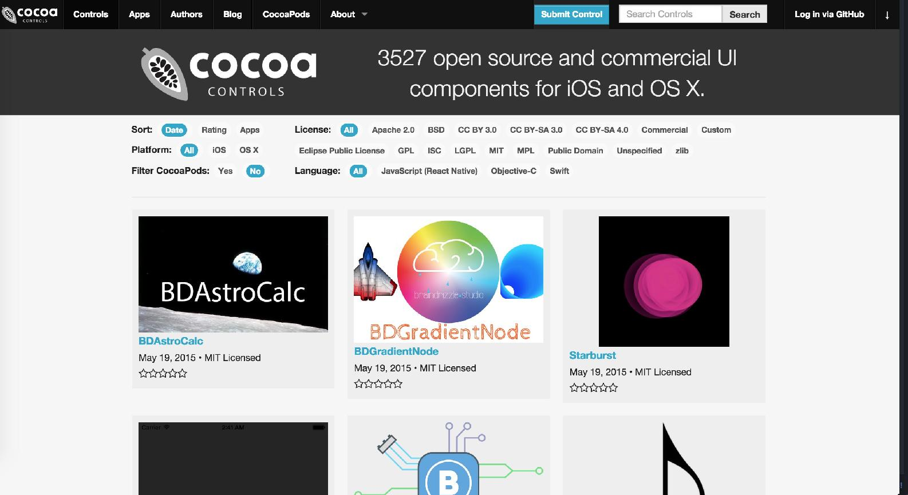

到底如何引入第三方库也是很有趣的事情。直觉来说，应该直接把要引入的库拖进我们的当前项目，但是这样一来，会引发一些不同项目之间的编译问题，以及版本管理的问题。
所以 CocoaPods 作为一种优雅的解决方案就显得格外清新。
打开系统的 终端 (Terminal)
gem install cocoapods
在终端里进入我们的项目文件夹，Diary 我存放在 Home 的 SourceCode 文件夹下
cd SourceCode/Diary
pod setup
这时候就会为你生成一个 Podfile
# Uncomment this line to define a global platform for your project
platform :ios, '8.0'
use_frameworks!
target 'Diary' do
pod 'pop'
end
'use_frameworks!' 的意思是将第三方库以 Framework 的方式引用，这样不同 App 间如果都引用了同一个第三方库，那么就不针对每个 App 都再创建一个那个库的实例，以达到节省系统内存的作用。
在 target 'Diary' 里加入 pod 'pop' 就完成了 pop 的引用添加。
最后，执行
pod install
就可以完成安装。
安装完成后帮你生成一个 .xcworkspace 的文件，在这里就是 Diary.xcworkspace，从现在开始，就要使用 Diary.xcworkspace 来打开我们的项目了。
以 pop 为例，在优化一节里我们使用了这个来自 Facebook 的第三方库，pod install 之后，我们需要在引用的地方头部输入
import pop
完整的代码应该是这样的
import pop
class DiaryLabel: UILabel {
override func touchesBegan(touches: Set<NSObject>,
withEvent event: UIEvent) {
// 使用 Pop 对其进行缩放
var anim = POPSpringAnimation(propertyNamed:
kPOPLayerScaleXY)
anim.springBounciness = 10
anim.springSpeed = 15
anim.fromValue = NSValue(CGPoint: CGPointMake(1.0, 1.0))
anim.toValue = NSValue(CGPoint: CGPointMake(0.9, 0.9))
self.layer.pop_addAnimation(anim, forKey: "PopScale")
super.touchesBegan(touches as Set<NSObject>,
withEvent: event)
}
override func touchesEnded(touches: Set<NSObject>,
withEvent event: UIEvent) {
// 使用 Pop 对其进行缩放还原
var anim = POPSpringAnimation(propertyNamed:
kPOPLayerScaleXY)
anim.springBounciness = 10
anim.springSpeed = 15
anim.fromValue = NSValue(CGPoint:
CGPointMake(0.9, 0.9))
anim.toValue = NSValue(CGPoint: CGPointMake(1.0, 1.0))
self.layer.pop_addAnimation(anim,
forKey: "PopScaleback")
super.touchesEnded(touches as Set<NSObject>,
withEvent: event)
}
}
这可能为刚开始学习 iOS 的你打开了一个世界的大门，全世界有非常多优秀的程序员在分享他们的代码。
CocoaControls 是非常老牌的一个分享社区

阅读别人的代码是最快速的学习途径，你不妨随时浏览一下。